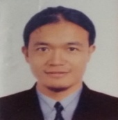

Noel Villaluz
PEE, REE, PMP · Electrical & Instrumentation QA/QC Supervisor / Engineer
Electrical engineering and E&I quality professional with more than 19 years of experience across oil & gas, gas compression, refineries, power plants, substations, industrial facilities and major infrastructure projects.

Professional Services
Engineering, control, residential design, quality and completion support.
⚡ Electrical Design
Load calculations, cable sizing, load flow, short-circuit studies, protection coordination, arc-flash analysis, grounding design, power-factor correction, lighting and electrical design review.
⚙ Control
Industrial electrical and instrumentation control support, PLC/HMI-related systems, control philosophy, wiring and schematic review, instrumentation and automation troubleshooting.
🏠 Home Interior
Practical residential electrical planning including lighting layouts, receptacles, dedicated loads, panel schedules, circuit arrangement and design coordination.
✓ Quality & Completion Consultant
ITP and inspection documentation, QA/QC surveillance, RFI coordination, nonconformity management, testing, punch-listing, pre-commissioning, completion and turnover support.
Professional Services Projects
Selected engineering, design, control, residential and quality/completion service projects and portfolio work.
⚡ Electrical Design Projects
Electrical design and engineering portfolio including load calculations, cable sizing, protection, grounding, lighting, power distribution and technical design review.
⚙ Control & Automation Projects
Control and instrumentation portfolio including control philosophy, wiring and schematic review, PLC/HMI-related systems and automation support.
🏠 Residential & Home Interior Projects
Residential electrical planning including lighting layouts, receptacle and dedicated-load planning, panel schedules, circuit arrangement and design coordination.
✓ Quality & Completion Projects
QA/QC and completion consultancy portfolio including ITPs, inspection documentation, RFI coordination, NCR management, testing, punch-listing, pre-commissioning and turnover support.
Education
Academic foundation in Electrical Engineering.
Bachelor of Science in Electrical Engineering
Manuel S. Enverga University Foundation Inc.
Lucena City, Philippines
Training & Certifications
Professional licenses, international certifications, quality credentials and industry qualifications.
Professional Licenses
✓ Professional Electrical Engineer (PEE) – Philippines
✓ Registered Electrical Engineer (REE)
Project Management & Quality
✓ Project Management Professional (PMP)
✓ CQI-IRCA ISO 9001:2015 QMS Lead Auditor
✓ Lean Six Sigma Green Belt
IECEx Certification
✓ Certified IECEx Inspector
Ex 001, Ex 003, Ex 004, Ex 006, Ex 007 & Ex 008
Saudi Aramco Qualifications
✓ PID Electrical Inspector: Passed
✓ PID Instrumentation Inspector: Passed
✓ PID Communication Inspector: Passed
✓ VID QM01 – Electrical: Passed
✓ VID QM17 – Cables: Passed
✓ VID QM16 – Transformer: Passed
✓ VID QM02 – Instrumentation: Passed
Offshore Safety Training
✓ BOSIET – Basic Offshore Safety Induction and Emergency Training: Completed
Major Projects
Selected Oil & Gas, Energy, Power and Industrial projects delivered across the Middle East and Asia.
ARAMCO Zuluf AM Crude Platform Project – Package 3
Client: Saudi Aramco
Company: NMDC Energy
Position: Electrical & Instrumentation QA/QC Supervisor
Location: UAE Onshore / Saudi Arabia Offshore
Period: Dec 2025 – Present
ARAMCO Jafurah Utilities, Sulfur & Interconnecting System Project
Client: Saudi Aramco
Company: Hyundai Engineering
Position: Instrumentation QA/QC Supervisor
Location: Jafurah, Saudi Arabia
Period: Oct 2023 – Oct 2025
ARAMCO Hawiyah & Haradh Gas Compression Plant Project
Client: Saudi Aramco
Company: ApplusVelosi
Position: Electrical & Instrumentation Third-Party Inspector
Location: Haradh, Saudi Arabia
Period: Apr 2019 – Mar 2023
ARAMCO Jazan Refinery Project
Client: Saudi Aramco
Discipline: Instrumentation & Communication
Role: QA/QC Inspection
Location: Saudi Arabia
ARAMCO Wasit Gas Project
Client: Saudi Aramco
Discipline: Instrumentation
Role: QA/QC Inspection
Location: Saudi Arabia
ADCO Asab Project
Client: ADCO
Industry: Oil & Gas
Discipline: Electrical & Instrumentation
Location: United Arab Emirates
Ras Laffan C Power & Water Project
Industry: Power & Water
Discipline: Electrical
Role: QA/QC Engineering / Inspection
Location: Qatar
PetroRabigh Refining & Petrochemical Development Project
Company: Carlo Gavazzi Arabia Co. Ltd.
Position: Instrument QC Inspector
Location: Rabigh, Saudi Arabia
Period: Aug 2007 – Aug 2008
Koniambo Nickel Project
Industry: Mining & Industrial
Discipline: Electrical & Instrumentation
Role: QA/QC Inspection
Hadeed Iron & Steel – Direct Reduction Module E Project
Industry: Iron & Steel
Position: Junior Instrument QC Inspector
Location: Jubail, Saudi Arabia
Period: Mar 2007 – Aug 2007
Core Competencies & Areas of Expertise
Key professional capabilities developed through more than 19 years of Electrical, Instrumentation & Control engineering, QA/QC, inspection, testing, pre-commissioning and project completion experience across major Oil & Gas, Offshore, Petrochemical, Power, Utilities and Industrial projects.
E&I QA/QC Management
Quality planning and implementation, ITP compliance, inspection coordination, quality surveillance, NCR/CAR management, quality reporting, KPI monitoring and coordination with Construction, Engineering, Pre-Commissioning, Commissioning and Client teams.
Electrical Inspection & Testing
Inspection and testing of HV, MV and LV electrical installations and systems, including equipment installation, cabling, termination, grounding, protection, functional verification and compliance with approved engineering documents and project requirements.
Instrumentation & Control
Inspection, installation verification, calibration and testing of field instrumentation, process measurement, control and safety systems, instrument cabling, termination, loop-related activities and system interfaces.
Client & Third-Party Inspection
Independent inspection, surveillance and technical verification of E&I construction and testing activities, including witness and hold points, compliance assessment, quality documentation review and coordination with Client and Contractor representatives.
Testing & Pre-Commissioning
Coordination and verification of inspection and test activities, functional testing, test packages, system readiness, pre-commissioning requirements, outstanding work identification and punch-list management.
System Completion & Turnover
Mechanical completion and system/subsystem verification, punch-list closeout, inspection and test record completion, quality dossier review, turnover documentation and support for final system acceptance and handover.
Electrical Engineering Studies
Load calculations, cable sizing, load-flow analysis, short-circuit studies, protection coordination, arc-flash assessment, grounding system analysis and power-factor correction using engineering software and calculation tools.
Technical & Quality Documentation
Review and management of IFC drawings, specifications, method statements, ITPs, inspection checklists, RFIs, ITRs, test reports, NCRs, punch lists, red-line drawings, as-built documentation and final quality dossiers.
Codes, Standards & Compliance
Application and interpretation of project specifications, Saudi Aramco engineering requirements and internationally recognized standards including IEC, IEEE, NFPA, NEC, NEMA and other applicable engineering and quality standards.
Quality Leadership & Coordination
QA/QC team supervision, inspector coordination, technical guidance, quality meetings, field surveillance, interface management, corrective-action follow-up, lessons learned and continuous quality improvement.
Professional Experience & Technical Expertise
More than 19 years of progressive experience in Electrical, Instrumentation & Control engineering and QA/QC across major Oil & Gas, Offshore, Petrochemical, Power, Utilities and Industrial projects in the Middle East and Asia.
Professional Experiences
Extensive experience in E&I QA/QC supervision, third-party/client inspection, construction quality control, testing, pre-commissioning, commissioning, system completion and turnover, with responsibilities spanning technical compliance, inspection management, multidisciplinary coordination and quality assurance.
Electrical & Instrumentation QA/QC Supervisor
Lead and supervise multidisciplinary Electrical and Instrumentation QA/QC teams for construction, inspection, testing, pre-commissioning and project completion activities. Review and implement approved ITPs, inspection checklists, procedures and project specifications; coordinate RFIs and hold/witness point inspections; monitor NCRs, corrective actions, punch lists and quality performance; interface with Construction, Engineering, Pre-Commissioning, Commissioning and Client representatives; conduct quality meetings, surveillance and technical assessments; mentor inspectors; and support compilation and acceptance of final turnover documentation and quality dossiers.
Instrumentation QA/QC Supervisor
Supervise instrumentation and control quality activities covering material receiving, installation, inspection, calibration, testing and pre-commissioning. Verify field instruments, junction boxes, instrument and signal cables, cable trays and conduits, control and marshalling cabinets, process instrumentation and associated control systems. Coordinate inspections with Construction, Engineering, Commissioning and Client teams; review RFIs and inspection records; monitor punch items and nonconformities; and ensure compliance with approved drawings, specifications, ITPs, procedures and applicable international standards.
Electrical & Instrumentation Third-Party / Client Inspector
Perform independent inspection, surveillance and verification of Electrical and Instrumentation construction activities against approved IFC drawings, project specifications, Saudi Aramco requirements and applicable international standards. Review engineering and design documentation, inspect equipment and system installation, witness electrical and instrumentation testing, verify inspection records and quality documentation, monitor construction deficiencies and corrective actions, and support system completion, pre-commissioning and final acceptance.
Electrical QA/QC Engineer / Inspector
Perform QA/QC inspection and technical verification of substations, GIS and switchgear, transformers, MCCs, generators, motors, power and control panels, HV/MV/LV cables, cable containment systems, grounding and lightning protection, lighting and small-power systems. Review drawings, method statements, ITPs and test procedures; coordinate RFIs; witness installation and electrical tests; verify test results and documentation; identify nonconformities; and support pre-commissioning, system completion and turnover.
Instrumentation & Communication QA/QC Inspector
Inspect installation and testing of field instrumentation, process measurement devices, junction boxes, instrument cables, fiber-optic and communication systems, fire and gas systems, control panels and associated cable containment. Verify calibration, termination, continuity and loop-related activities; review inspection and test records; coordinate RFIs and punch-list closure; and ensure installations comply with approved engineering documents and project quality requirements.
Testing, Pre-Commissioning & Project Completion
Support inspection and verification throughout testing, pre-commissioning, mechanical completion and system turnover. Review test packages and inspection records, coordinate outstanding RFIs and punch items, verify rectification of quality observations and NCRs, confirm completion of required inspections and tests, and support preparation and acceptance of final quality dossiers and turnover documentation.
Major Equipment & Systems Experience
Extensive inspection, installation, testing, pre-commissioning and QA/QC experience across major electrical, instrumentation and control systems.
⚡ Electrical Equipment & Systems
230 kV GIS; MV/LV AIS and MCCs; power, lighting and control panels; Local Control Stations (LCS); HV/MV/LV transformers; generators; synchronous and induction motors; HV/MV/LV power and control cables; cable trays/ladders, raceways and conduits; lighting fixtures and small power; MOVs; electric heaters and heat tracing; cathodic protection; battery banks and chargers; DC and UPS systems; HVAC electrical systems; grounding and lightning protection system; and protection relays.
⚙ Instrumentation & Control Equipment & Systems
Junction boxes and enclosures; instrument and signal cables; instrument cable trays and conduits; ESD, VMS, MPS, CCS and DCS systems; marshalling cabinets; flow transmitters and elements; pressure transmitters, gauges and switches; level transmitters, gauges and switches; temperature transmitters and sensors including RTDs and thermocouples; vibration transmitters and sensors; gas detectors; analyzer cabinets, shelters and transmitters, fire detection and alarm system.
Professional Affiliations
Active involvement in professional engineering and project management organizations.
Institute of Integrated Electrical Engineers of the Philippines, Inc. (IIEE)
Professional Affiliation
Electrical engineering professional organization supporting technical excellence, professional development, and advancement of the electrical engineering profession.
Project Management Institute (PMI)
Professional Affiliation
Global professional organization focused on project management standards, professional development, and project leadership.
About
Professional electrical engineering and E&I quality leadership.
Noel Villaluz is a Professional Electrical Engineer, Registered Electrical Engineer and Project Management Professional with extensive experience in inspection, design, execution, testing, commissioning and quality management of electrical and instrumentation systems.
His project background includes GIS substations, gas compression, oil and gas facilities, refineries, utilities, power generation, transmission and distribution, industrial plants and offshore/onshore project environments.
Career Highlights
Selected experience from the professional resume.
Electrical & Instrumentation QA/QC Supervisor
ARAMCO Zuluf AM Crude Platform Project Package 3 — UAE onshore and Saudi Arabia offshore.
Instrumentation QA/QC Supervisor
ARAMCO Jafurah Utilities, Sulfur and Interconnecting System Project, Saudi Arabia.
Electrical & Instrumentation Third-Party Inspector
ARAMCO Hawiyah and Haradh Gas Compression Plant Project, Saudi Arabia.
Certifications & Training
- Professional Electrical Engineer (PEE), Philippines
- Registered Electrical Engineer (REE), Philippines
- Project Management Professional (PMP)
- Certified IECEx Inspector — Ex 001, 003, 004, 006, 007, 008
- CQI-IRCA ISO 9001:2015 QMS Lead Auditor
- Certified Lean Six Sigma Green Belt
- ARAMCO PID Electrical, Instrumentation & Communication Inspector Qualification
- ARAMCO VID CBT qualifications
- BOSIET completed
Contact
Engineering consultancy, QA/QC support and professional opportunities.
Noel Villaluz
Professional Electrical Engineer · E&I QA/QC Supervisor / Engineer
📍 United Arab Emirates